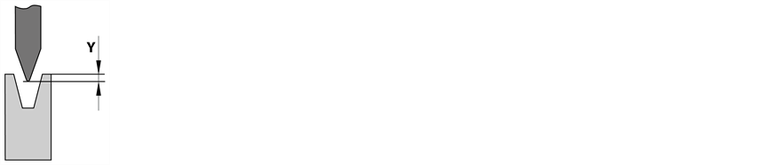

使用此选项卡来校正冲杆。角度校正分为以下几部分：
在该区中可更改Y轴冲杆的位置和参数（上梁）。
- Y绝对
- Y相对
使用此选项可更正冲杆的实际位置。该数值为从上模的下部边缘到下模的上部边缘之间的距离。可分别校正左手（Y1）轴和右手（Y2）轴，或将两轴作为一组共同校正。

微调轴位置输入值。
在该区中可更改M轴冲杆的位置和参数（下模）。
- M绝对
- M相对
使用此选项可校正V形系统顶部边缘的实际位置。该数值为从 V型系统的上部边缘到下压工作台的上部边缘之间的距离。

微调轴位置输入值。
使用此分区来校正一般冲杆参数。
- 上死点
- 最小：板材厚度 + 1.0 mm
- 最高： < Y1和Y2上的最高位置
- 切换点下降
- 最低： 安全点
- 最高： < Y1和Y2上的最高位置
- 夹紧点
- 最小：50%板材厚度
- 最高： < 切换点
定义折弯 折弯是指配置文件编程要素并且指定工件形状的变化。可以被分配给折弯的一系列属性：边长，折弯角度，折弯半径（可选），初始折弯角度（可选），额外的属性（可选）。折弯可包括若干折弯过程。循环结束时冲杆的位置。
控制上梁的快速运动到慢速运动的切换。该选项在一个较高的点设置由快速切换到慢速。
定义“夹紧”折弯零件的位置。这在回缩 回缩是指是后定规臂必须向后运动，以避免折弯部分的后定规挡块与折弯零件发生碰撞。一旦折弯零件在上模和下模之间夹紧，将执行回缩。已编程或折弯随动托料装置已启用时是很重要的。
- 切换点上升
- 最低：编程的Y位置
- 最高：最高位置
- 折弯速度下降
- 最小：0.5 mm/s
- 最大：10.0 mm/s
- 折弯速度上升
- 最小：0.5 mm/s
- 最大：10.0 mm/
- 压力
- 最小：0.0 t
- 最高： < 受最大机床压力和最大工具载荷的限制。
- Dwell time
定义上梁在切换到快速移动前以定义的速度向上移动的距离。
如果折弯速度上升参数的数值设置为<10毫米/秒，切换点上升的值将被自动设置为板材厚度。
定义折弯的向下行程的速度
当启用折弯随动托料装置时，最大速度降低（降低取决于阿尔法轴）。
定义折弯的向上行程的速度。
仅当参数切换点上升 > BDC时，该速度才会有效。如果向上折弯参数的数值设置为<10毫米/秒，切换点上升的值将被自动设置为板材厚度。
定义折弯零件所应施加的力。
定义上梁在下死点（BDC）上的停留时间
最小：0.0 s
最大：10s（可配置）
- 下死点停止
- 无冲杆行程
- 凸面加工系数
- 最小：0.0
- 最大: < 10
如果该参数已设置到开，则上梁停留在下死点（BDC），直至操作人员操作控制系统为止（脚踏板或双手按钮）。一旦操作员释放控制系统，上梁将运动至编程的上死点。
如果启用该参数，则上梁在当前过程中不会移动。该选项允许外设在准备下一工艺步骤时在该应用程序级上进行复杂的动作。该功能可能对机器人控制的折弯机十分有用，例如：重新定位轴。
调节凸度
<1 - 降低凸度
>1 - 增加凸度